新手技能
● 光蝕:使用光技能時追加50%傷害，並且回復1%HP。
●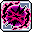暗蝕:使用暗技能時追加50%傷害，並且不需要消耗MP。
● 滲透:攻擊怪物無視怪物的防禦力10%。
滲透:攻擊怪物無視怪物的防禦力10%。
●平衡:10秒內格擋100%，使用平衡技能時追加100%傷害，使用光技能時追加50%傷害，並且回復1%HP 使用暗技能時追加50%傷害，並且不需要消耗MP。
●星光瞬移:瞬間移動到所見最近的怪物位置，在村莊等非打怪地圖則是隨機瞬移。
●光明力量:意志、洞察直接提升至20級，智力增加20，升級時提高MP增加量，永久對黑暗免疫。
一轉技能
●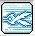星星閃光[光](依據光/暗路選擇而決定技能):對前方的五位敵人攻擊一次。
●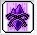黑暗球體[闇](依據光/暗路選擇而決定技能):對前方的六位敵人攻擊三次。
●閃光瞬步:即瞬間移動。與法師瞬間移動不同的是順移時附帶隱形暫時無敵，且範圍較廣。
●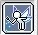魔法防禦:即法師的魔心防禦被動版本。所受到傷害的85%以MP代替，若無可替代的MP則直接減少HP。
●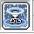補充魔力:增加30%的MP。
●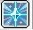光魔法強化:光系列魔法攻擊增加5%傷害。
●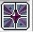暗魔法強化:暗系列魔法攻擊增加5%傷害。
二轉技能
●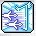光明長槍[光]:攻擊六位怪物四次。
● 光柱爆發[光]:最多將十位怪物往左右彈開，為推怪技能。
光柱爆發[光]:最多將十位怪物往左右彈開，為推怪技能。
●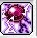黑暗之眼[闇]:攻擊8位敵人。按住不放會持續攻擊，攻擊方向用←→按鍵調整。
●黑暗祝福:三秒未遭受傷害則增加一顆球；受到傷害則以一顆球減少70%傷害。
●極速詠唱:180秒內提升攻擊速度2階段。
●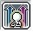咒語精通:提高閃亮克魯熟練度50%，且增加10魔攻。
●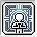智慧昇華:永久提高智力40。
三轉技能
 光箭[光]:攻擊八位敵人4次，可利用方向鍵轉換方向，按住技能鍵不放可持續攻擊。
光箭[光]:攻擊八位敵人4次，可利用方向鍵轉換方向，按住技能鍵不放可持續攻擊。
● 閃亮救贖[光]:對六位敵人造成三次傷害，且可回復自己的HP。
閃亮救贖[光]:對六位敵人造成三次傷害，且可回復自己的HP。
●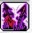黑暗之錨[闇]:對六位敵人造成兩次傷害。
● 死神鐮刀[平衡]:對十位敵人造成六次的強大傷害。
死神鐮刀[平衡]:對十位敵人造成六次的強大傷害。
●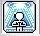魔力護盾:被動增加40%所有屬性及異常狀態抗性，主動可無視異常狀態三次，
●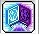光暗之盾:增加物理/魔法防禦300，且20%機率無視傷害。
●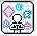團隊精神:對自己及團隊成員增加40魔攻。
●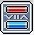光暗轉換:當MP比率大於HP比率時傷害+20% 當MP比率小於HP小比率時爆擊+30%
四轉技能
●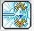急速反射[光] :對周圍最多八位敵人造成四次傷害。
●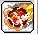晨星隕落[闇]:對八位敵人造成傷害，且會擊退怪物，攻擊後爆炸再產生一次傷害。
●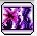暗黑烈焰[闇]:對八位敵人造成七次傷害。
●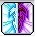絕對擊殺[平衡]:攻擊時對一般怪物最多2體秒殺，不適用即死的怪物或者BOSS則是造成七次傷害並且附加40%無視防禦效果。
●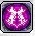黑暗強化:180秒內攻擊成功時有80%機率傷害增加1%，施放此技能後疊加效果會重置，最多重疊15次。
●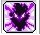黑暗魔心:180秒內無視怪物防禦40%、無視怪物屬性抗性100%
●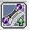精通魔法:提高閃亮克魯熟練度至70%，且增加30魔攻、增加爆擊最小傷害15%。
●光暗精通:平衡狀態時間增加7秒。減少光蝕/暗蝕之間切換的時間，再追加死神鐮刀傷害100%
●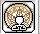楓葉祝福:對自己和所有成員提升所有的屬性15%。
●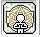楓葉淨化:解除異常狀態。
超技能
●(P)極速反射-強化加農：增加總傷20%。
●(P)極速反射-提高射程：提高射程50。
●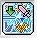(P)極速反射-釋放：傷害轉移減少量減少至0%。
●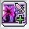(P)暗黑烈焰-強化加農：增加總傷20%。
●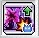(P)暗黑烈焰-臨時目標：最大目標量增加2。
●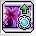(P)暗黑烈焰-靈魂充能：提高蓄能量。
●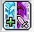(P)絕對擊殺-強化加農：增加總傷20%。
●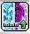(P)絕對擊殺-提高射程：提高射程40。
●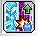(P)絕對擊殺-臨時目標：最大目標量增加1。
●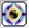重啟平衡(140)：進入平衡狀態。*無法加持延長
●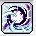末日審判(160)：最多綁15名敵人，傷害越高綁越久。
●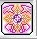英雄誓言(190)：60秒內傷害增加10%。*英雄團隊員可共享
五轉技能
●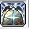真理之門(V1)：37秒內，每五秒向12名敵人攻擊10次
●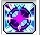混沌共鳴(V2)：6秒內向10名敵人攻擊。 (光蝕 ：週期性攻擊四次；暗蝕：週期性攻擊五次；平衡：週期性攻擊六次。)
●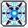光與暗的洗禮(V3)：發動十三次的七次攻擊，使用絕對擊殺可獲得一把意志之劍，十二把可重置CD。*爆擊率、無視防禦率100%